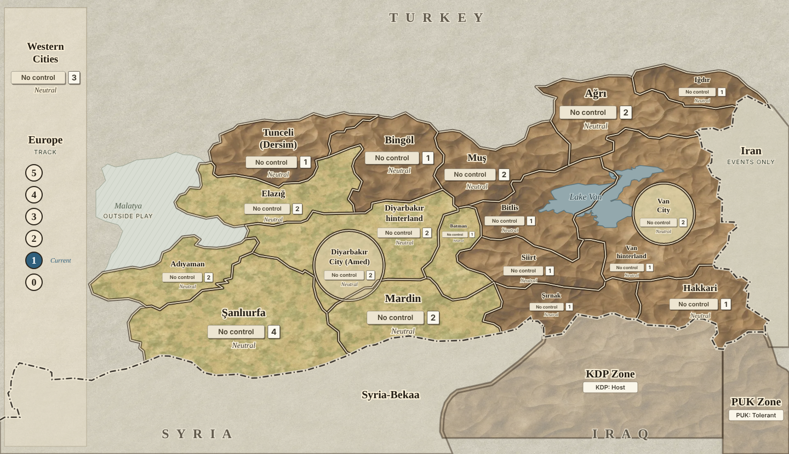
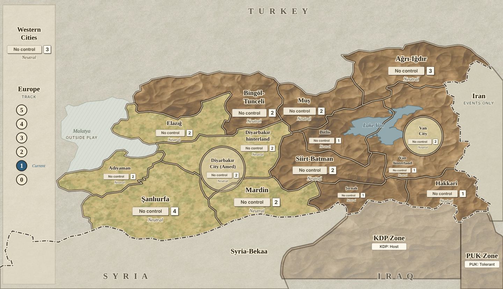
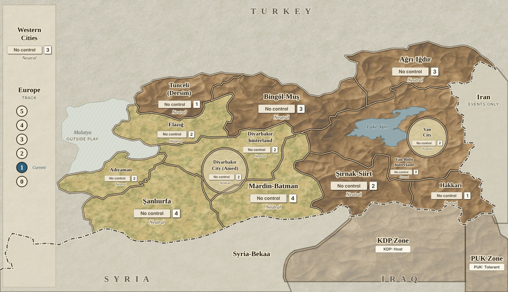

Map proposals: Kurdish-region provinces
Mockup only. Same board look; only the number, name and shape of domestic spaces change. Details in README.md.
| Domestic spaces | Total Pop | Links | |
|---|---|---|---|
| Proposal 1: Province for province | 19 | 32 | 33 |
| Proposal 2: Paired provinces | 16 | 32 | 28 |
| Proposal 3: Current groupings, real shapes | 14 | 33 | 22 |
Proposal 1: Province for province
One space per orange-area province plus Van City and Diyarbakır City.

Proposal 2: Paired provinces
Neighbor Pop 1 provinces pair up: Siirt-Batman, Bingöl-Tunceli, Ağrı-Iğdır.

Proposal 3: Current groupings, real shapes
Today's regions with Van City and Iğdır added, names fixed, shapes redrawn.
